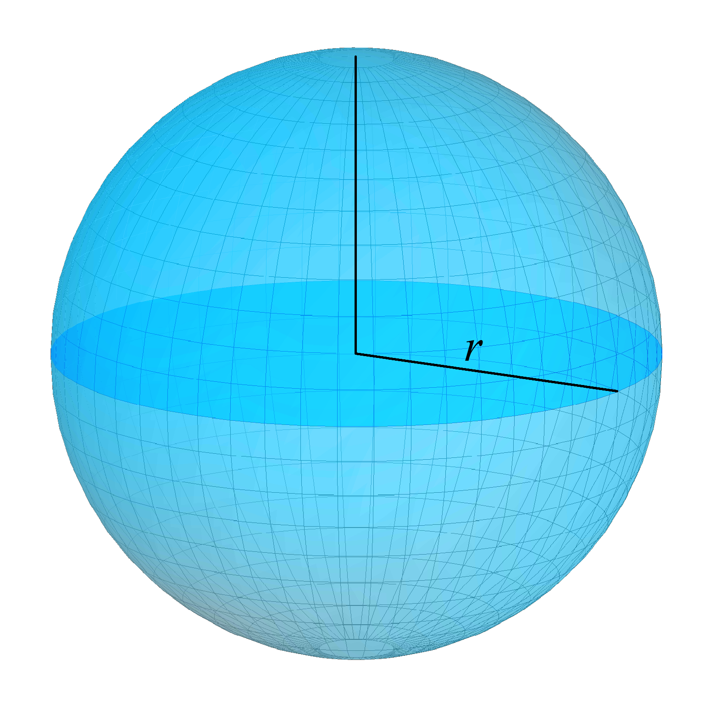
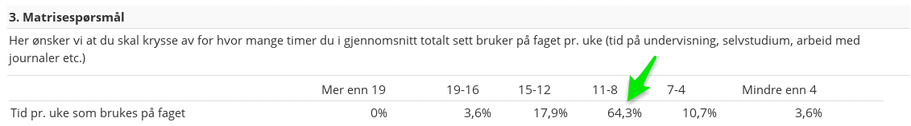
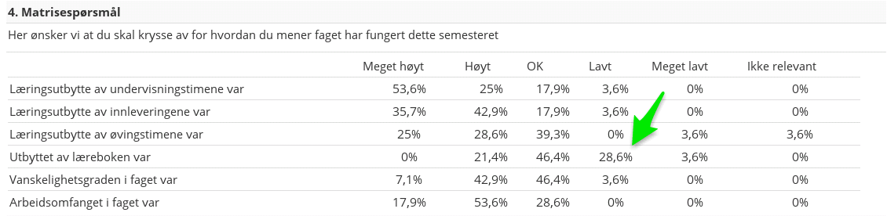
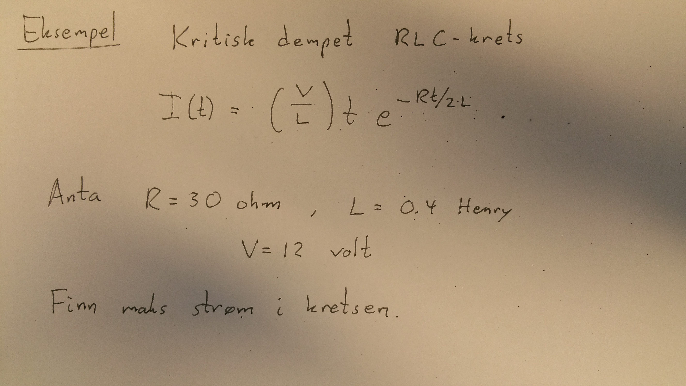

MAT100 for ELK og KOM
Uke 8
07.10.2015
Alexander Lundervold
institutt for data- og realfag
Sist uke
- Regneregler for derivasjon
- Implisitt derivasjon
- Koblede hastigheter
Denne uken
- Flere anvendelser av derivasjon: finne grenser til ubestemte uttrykk, bestemme funksjoners maks og min, optimering
- Integrasjon
Altså: denne uken
- Ferdig med derivasjon!

- Integralet
Eksamen MAT100, mars 2013:
En kuleformet ballong lekker ut luft. La $V(t)$ være volum (målt i $\text{cm}^3$) av ballongen ved tiden $t$ (målt i sekunder), og $r(t)$ radius til ballongen.
Ved et gitt tidspunkt er radius $20$ cm, og volumet minker med farten $10 \text{cm}^3/\text{sek}$. Hvor fort minker radien akkurat da?
Koblede hastigheter. Løsningsstrategi.
Se også dokumentet
Strategi for koblede hastigheter-problemerpå itsLearning
Steg 1: Forstå problemet
- Les oppgaveteksten nøye. Tegn en figur.
- Gi navn til relevante størrelser
- Hva vet vi? Hva vil vi finne?
Figur:
{kind=link}
Vet at:
$\frac{dV}{dt} = -10$ ved tidspunktet da $r=20$.Vil finne:
$\frac{dr}{dt}$ ved dette tidspunktet.Steg 2: Finn sammenheng mellom kjente og søkte størrelser
- Finn en eller flere ligninger som relaterer det du ønsker å finne til det du vet
- Dette er ofte det vanskeligste steget. Kan f.eks. bli nødvendig å bruke geometriske argument som eliminerer noen av variablene.
Volumet av en kule er gitt ved
$$V = \frac{4}{3} \pi r^3$$Steg 3: Deriver og løs
- Deriver ligningene implisitt
- Sett inn størrelsene du har fått oppgitt, og løs for størrelsene du ønsker å finne. Det kan hende du mangler en ligning. Isåfall, gå tilbake til forrige steg.
Har at
$$ \begin{align} \frac{d}{dt} \bigg(V(t)\bigg) &= \frac{d}{dt} \bigg(\frac{4}{3} \pi r^3\bigg) \\ V'(t) &= \frac{4}{3} \pi \cdot 3 r^2 \cdot r'(t)\\ V'(t) &= 4 \pi \cdot r^2 \cdot r'(t) \end{align} $$Ved det aktuelle tidspunktet er $V'(t) = -10$ og $r=20$, slik at
$$r'(t) = \frac{-10}{4\pi \cdot 20^2} = -\frac{1}{160\pi} \approx -0.00199.$$Steg 4: Vurder løsningen
- Formuler svaret med ord
- Er svaret rimelig? Kan du sjekke svaret, eller deler av svaret?
- Legg løsningsmetoden i verktøykassen. Kanskje får du bruk for den senere.
Radiusen til kulen avtar med omtrent $0.002$ $\text{cm}/\text{min}$.
Rimelig?
Rimelig at radiusen minker sakte. Volumet avtar bare med $10$ $\text{cm}^3/\text{min}$ ved dette tidspunktet, mens utgangsvolumet er
$$V = \frac{4}{3} \pi \cdot 10^3 = 4188.8 \,\text{cm}^3$$Underveisevaluering
Underveisevaluering
Underveisevaluering
Maks/min og optimering

Dersom $x=a$ er et lokalt ekstremalpunkt til $f$ så er $x=a$ et
- Kritisk punkt: $f'(a) = 0$
- Singulært punkt: $f'(a)$ eksisterer ikke eller
- Endepunkt i definisjonsmengden til $f$
{kind=link}
Eksempel
Fra sist (se forelesningsnotater):

Dersom
$ \begin{align} & f' > 0 \quad \mbox{stiger grafen}\\ & f' < 0 \quad \mbox{synker grafen} \end{align} $Merk: Dersom $x=a$ er et kritisk punkt, og
$ \begin{align} & f''(a) > 0 \quad \mbox{så smiler grafen. Dermed: et minimum}\\ & f''(a) < 0 \quad \mbox{så er grafen sur. Dermed: et maksimum} \end{align} $Eksempel på optimering
Fra Chris Cunningham
"Effektiv" health er en kombinasjon av armor og health. Formel: $$E = \frac{H(100+A)}{100}$$
Health koster 2.5 gold per enhet; armor koster 18. Du har 3600 gold. Hvor mye armor og health bør du kjøpe?
På grunn av pris på health og armor har vi
$$ 2.5H + 18A = 3600, \quad \mbox{så}$$$$A = 200 - \frac{5H}{36}$$
og
$$E=\frac{H(100+200-\frac{5H}{36})}{100} = 3H - \frac{H^2}{720}.$$Deriver og sett lik null. Får
$$H = 1080, \quad A = 50.$$Altså: kjøp 1080 health, 50 armor.
I virkeligheten litt mer komplisert. Trenger damage modifier og magic resist.
Se http://leagueoflegends.wikia.com/wiki/HealthIntegrasjon
Integrasjon
Idé:
{kind=link}